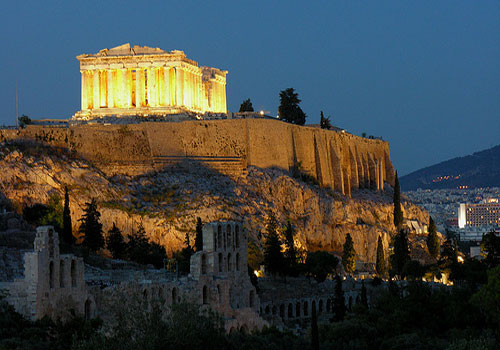
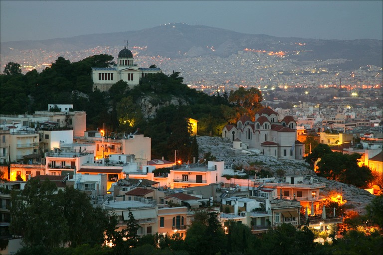

We want to host the next EuRuKo in the beatiful city of Athens. We are a bunch of tech, and non-tech people, from various backgrounds and cultures - even from diferent genres (yay!) and we want to organize the best possible conference both in terms of fun, knowledge and cultural exchange!
So come to Athens and enjoy the sun, the history, the food, the drinks and everything :)
Organizers (Alphabelitcal)
- Errikos Cohen (@eirc)
- Nikos Diamantopoulos (@nolamesa)
- Nikos Dimitrakopoulos (@nikosd)
- Vasilis Dimos (@nemlah)
- George Hatzigeorgiou (@banditaras)
- Sofia Kousi
- Theodoros Orfanidis (@teoulas)
- Vassilis Rizopoulos (@arcandros)
- Giorgos Tsiftsis (@giorgostsiftsis)
Supporting Companies
TBA
City of Athens




Follow @EurukoAthens on Twitter!